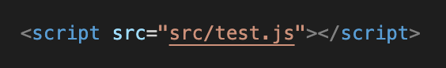
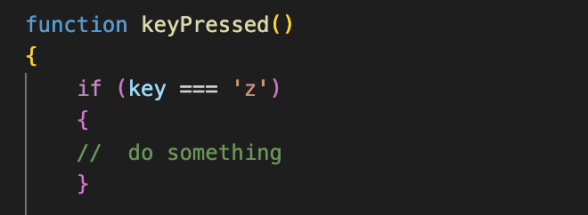

Introduction
When I started this project I had almost no knowledge of fronted web development. I had just started a course with
Code First Girls and learned the basics of HTML, CSS and JavaScript (which I highly recommend). During the course we
were encouraged to work on a personal project to get some practice in and to show that we had been paying attention
and were deserving of the course certificate. So, although I had some guidance throughout this course I believe that
anyone with some basic programming skills will be able to pull off this project.
I wrote this tutorial for anyone who might want to recreate this project and also for myself as writing this
tutorial was a nice way to track my progress. If you, like I did, have no previous knowledge of frontend web dev,
you’ll be figuring a lot of things out along the way. Stick with it and don’t lose sight of the goal: to have some fun
and learn a few things along the way.
DISCLAIMER: I am a beginner myself so I'm sure there are better/smarter ways to do things. Please contact me
if you have any tips! This is also not a step by step tutorial; my goal is just to give you some pointers on how to
go about this project.
The basics: HTML and CSS
HTML is the foundation of every webpage you see on the internet. It's like the blueprint or skeleton of a webpage.
Think of HTML as a set of instructions that tells your web browser how to display the content on a webpage. These
instructions are made up of special codes called "tags." Each tag serves a specific purpose and tells the browser
how to format and present different elements, such as headings, paragraphs, images, links, and more.
For example, if you want to display a heading on your webpage, you use the <h1> tag. If you want to
add a paragraph of text, you use the <p> tag. And if you want to include an image, you use the <img> tag.
While HTML takes care of the structure, CSS adds colors, fonts, and beautiful designs to make the webpage
look visually appealing. CSS helps you change the appearance of different elements on the page, such as the color of
text, the size of headings, the background color of sections, and more.
CSS works by selecting HTML elements using special rules, and then you can specify how those elements should
be styled. For example, you can use CSS to make all the headings on your page appear in a particular font, or you can
change the background color of buttons when someone hovers over them.
As an example, let’s take the tutorial button you pressed on to get to this page. The HTML tag <button> creates a button on the page.

The <a> tag turns the whole button into a link to the correct HTML file. It is imortant to create a link around the button tag instead of inside it if you want the whole button to be clickable. The <i> tag makes the
Font Awsome arrow
visible and   creates some space between the text 'TUTORIAL' and the arrow.
To change the appearance of the button, you will need CSS. I've added the button to the nav-button class
and can target this class in a .css file by typing the name of the class, preceded by a dot as you can see in the image below. I watched
this video
to learn more about ID's and classes. Just using 'button' without the dot will target all buttons. I wanted all buttons in this project to have the same background color and change to the same color when you hover over. For the navigation buttons I wanted a specific width and font size.

Creating an offcanvas menu
To create the offcanvas menu I used Bootstrap, a free framework that makes creating websites a lot easier.
Choose an offcanvas
from Bootstrap and adjust it to your liking. Just copy the HTML code and paste it to your .html file.
You can download the GitHub logo that I used
here
.
Creating a flow field
Watch this video for a short introduction to flow fields. I created my flow field using the JavaScript programming language. For a very short introduction to JavaScript check out this video . If you’ve never used JavaScipt before (like I had) you will probably need to ask the internet for help often. To create the flow field I used a library called p5.js, a JavaScipt library that will make your life as a creative coder a lot easier. I started out by coding along to this video , which teaches you an easy way to create a basic flow field using Perlin Noise. You can either start out by using the p5.js online editor or start by creating a JavaScipt file in your project directory. Link your JavaScript file to your HTML file using the <script> tag. For example:

The p5js website does a good job at explaining
how to set it up
. Definitely look into the concepts of Perlin noise and vectors. I found
this video
on vectors very insightful.
Adding visual effects
Once you’ve got your flow field up and running, you can start adding effects. To add effects I basically manipulated the parameters that I was using to create my flow field, such as the speed, the stroke weight , the color of the particles and the background color. You can detect if a key is pressed by using the keyPressed function , which is part of the p5.js library. Like so:
You can manage the duration of an effect by using the setTimeout function , which is a built-in JavaScript function. As an exercise you might want to start out by making the press of a specific key cause an increase in speed of the particles for a duration of (for example) three seconds. Then go from there and start adding your own effects!